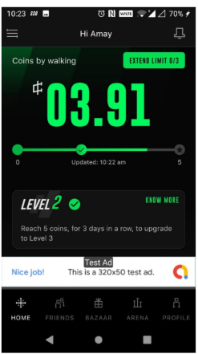
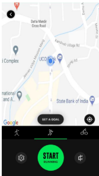
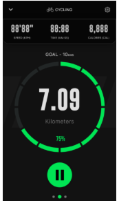
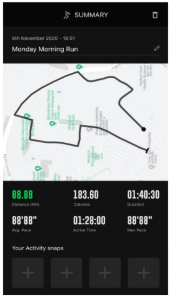

Case Study
Outdoor Activity Tracking
An activity tracking feature that allows users to track their runs and cycling rides, while also embedding within StepSetGo's existing incentivization model.
- Year
- 2021
- My role
- Product Manager
- Team
- 4 engineers (2 Android, 2 iOS), 1 designer

Problem Statement
Why this, why now
Through user interviews & surveys, we realised many users used a wide range of apps like Strava, NRC, and Adidas Running to track their runs/cycling rides. The goal was to make StepSetGo a one-stop shop for all things fitness.
Problem Statement
Breaking it down
-
01
Defining the Incentivization Model
With StepSetGo's model already in place, a new ruleset had to be defined for new activity types while covering a wide range of corner cases.
-
02
Fraud Detection Model
Checks to ensure that the activity is actually being done (for eg: differentiating between a run and a walk).
-
03
Accuracy of Activity Metrics
Accurate computation of raw data parsed through Google Maps and the user's movement coordinates.
User Goals
What people needed
Goals
- A one-stop shop for all things fitness
- A fun way to adopt running/cycling into their fitness routine
Business Goals
What success looked like for the business
~50,000
increase in MAU within the first 2 months
New ICP opened5/week
activities logged, among power users
Among the power usersCompetitor Analysis
Feature-by-feature comparison
| Feature | Strava | Nike Run Club | Adidas Running | StepSetGo | Notes |
|---|---|---|---|---|---|
| Option to Set a Goal | Y | Y | Y | Y | Required for MVP |
| Audio Feedback | N | Y | Y | N | Good to have, parked for v2 |
| Live Activity Splits & Route Updates | Y* | N | Y | Y | Required for MVP |
| Adding Photos / Social Features | Y | Y | Y | Y | Required for MVP |
The Solution
The experience, end to end



Impact
What changed after launch
20%
of MAU completed at least 1 activity within the first 15 days of launch
87%
post-activity metric accuracy, reported by the 5–6% of users who completed the feedback nudge form
Thank You
Questions, thoughts, feedback?
I'd love to talk through any part of this in more detail.